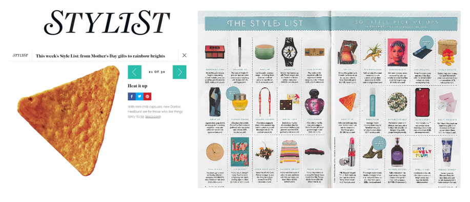
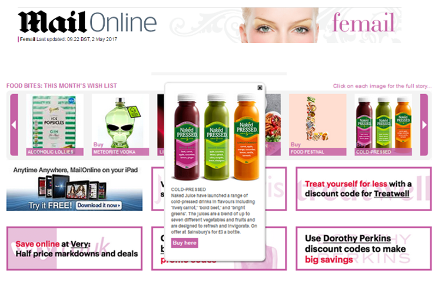
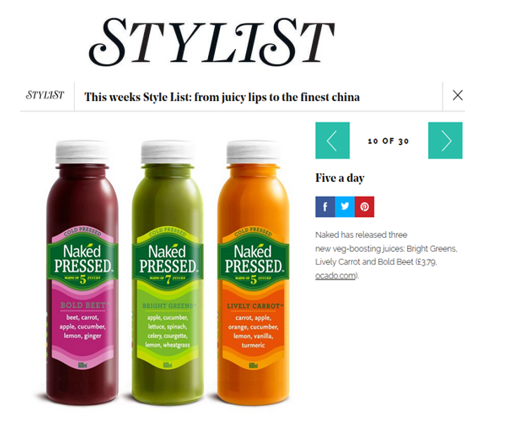
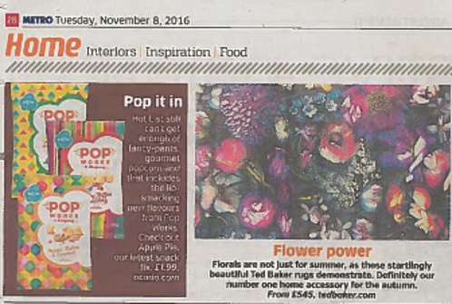
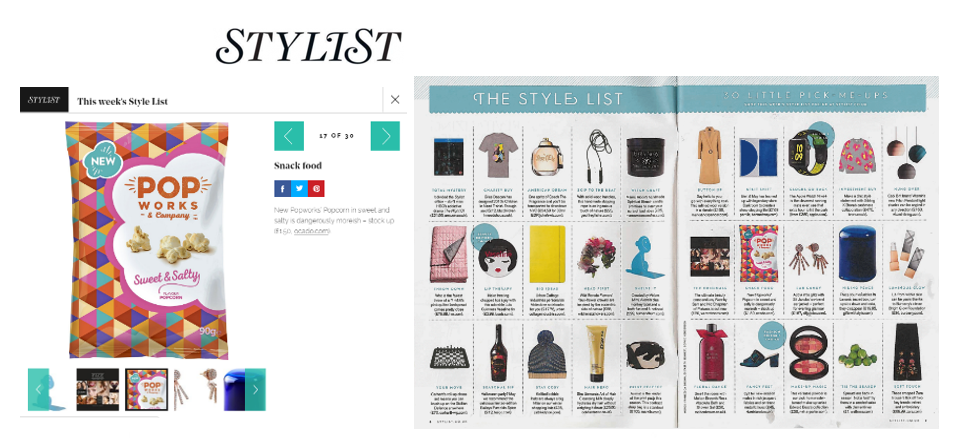
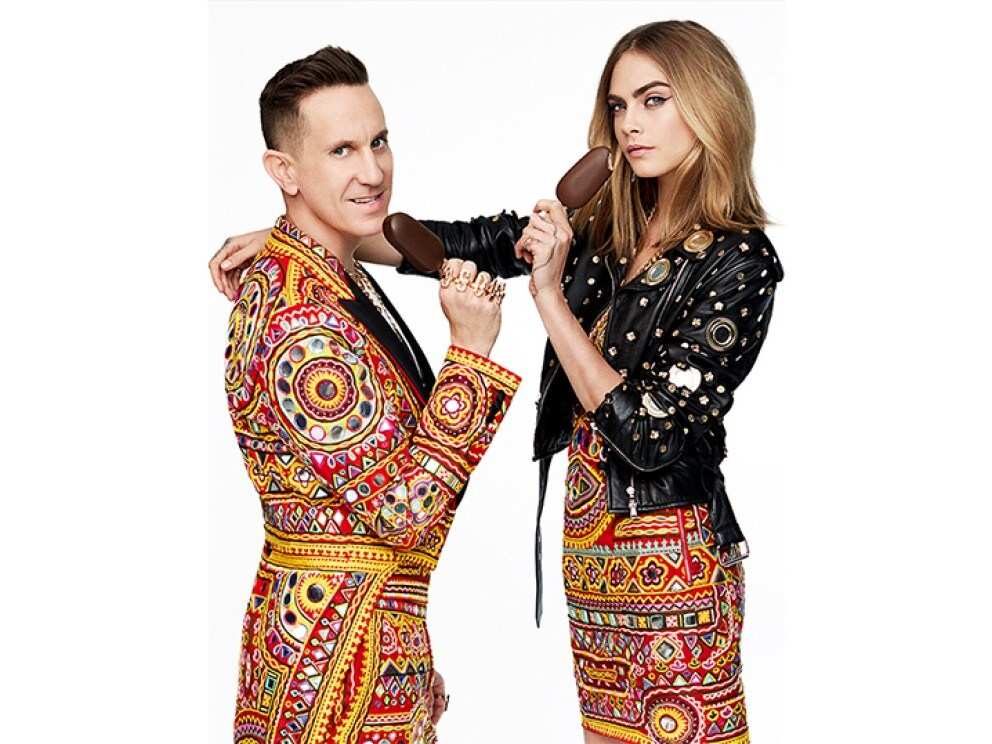
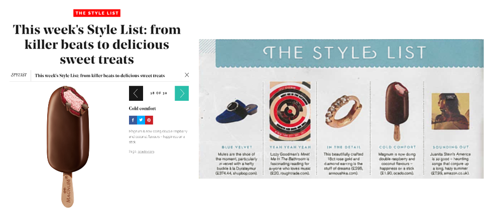

Laura Sharkey
A driven and passionate Freelance PR Professional, Laura has spent 8 years working at the top award-winning agencies. Previous clients include: Magnum Ice Cream, Doritos, L'Oreal, Dove, GHD, Ronald Macdonald House Charity, Asda, QVC Beauty, and Adidas.
Leading and managing UK and global campaigns from planning to delivery, Laura undertakes her work with an open and honest approach and is passionate about developing exceptional results for her clients.
With a wealth of agency experience, Laura has now started her own PR consultancy working on a number of small business, start-up and charity accounts.
Work
This is a non-exhaustive list highlighting some of the most successful campaigns I have had the pleasure of managing throughout my career.
Food & Drink
Doritos
Naked Cold Pressed Juice
Pop Works & Company
Magnum Ice Cream
Health & Fitness
Adidas
Doritos Heatburst
Planning and executing the PR launch of the new Doritos Heatburst collection, targeting both consumer and trade media. The client wanted to target both male and females with the new collection.
A robust media relations programme was drafted targeting relevant media channels with the news, alongside an eye-catching press release. Creative media kits were issued to a list of top tier media to review and try the new flavours themselves, resulting in a number of social media posts.
Extensive coverage secured in the likes of The Grocer, Metro, Closer, Now, Shortlist, Convenience Store and Just Food. Coverage was also secured within STYLIST magazine’s The Style List – which was a first for the brand!

Naked Cold Pressed Juice
Managed the PR for the launch of the Naked Cold Pressed Juice range, developing the media relations strategy, managing a two day media house tour and leading on securing results for the client.
Coverage was secured across high reaching and aspirational consumer media titles such as The Mail Online, STYLIST and the Metro. Trade media also targeted with coverage featured on Just Drinks, Bev Industry and Progressiver Grocer.


Pop Works & Company Popcorn
Responsible for developing the creative and managing the PR for the UK launch of new brand Pop Works & Company, developing the media relations strategy, leading on securing results for the client and managing the press office.
As part of the PR strategy we recommended a media and influencer launch event to showcase the new flavours of the popcorn, providing attendees the opportunity to taste and trial the unexpected flavours.
Following on from the press event, coverage was secured in top tier consumer and food media titles such as Metro, Good Food magazine and STYLIST.


Magnum X Moschino
Managed the PR for the UK activation of the ‘Daring to go Double’ campaign. Collaborating with daring designer Jeremy Scott, creative director of Moschino, and international supermodel and actress Cara Delevigne on a 360 campaign.
Responsible for securing coverage for the new indulgent Magnum Double flavours - Coconut and Raspberry and the Magnum x Moschino limited edition collaboration. Also responsible for the launch of the Magnum Pleasure Store, planning and executing the VIP launch party and securing coverage within the “what’s on pages” in the likes of TimeOut, Mail Online, Daily Express and Evening Standard.


Adidas Ultraboost
Crafted a PR media relations strategy and managed the press office for the launch of the new running trainer. Securing news and product placement within aspirational lifestyle and consumer media, such as HELLO! magazine, GQ, The Independent, The Evening Standard, STYLIST, GLAMOUR and Dezeen.
Responsible for engaging influencers and hosting weekly adidas run clubs for on-going brand awareness and talkability.
Services
PR Planning + Strategy
Plan and develop PR activities and strategic insight to help clients tell their stories to the right audiences at the right time.
Media Relations
Utilising strategic media relations skills and an extensive media network to deliver quality coverage for clients, guaranteed every time.
Influencer Marketing
Crafting social media strategy, managing content creation and influencer relationships for clients to amplify their brand, campaign message and engagement with desired audiences.
Events
Managing launch events, photoshoots, press tours and talent management.
Get in touch
If you'd like to hear more, you contact me via:
E-mail: laurasharkeypr@gmail.com
Phone: +447854766092
Or if you're feeling social: